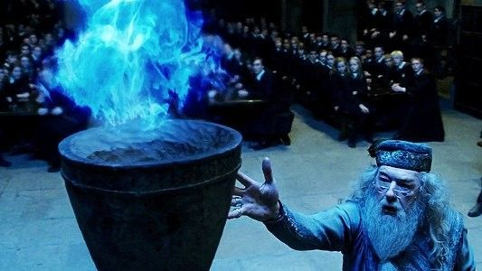

| Data De Lançamento | Diretor | Duração |
|---|---|---|
| 25 de novembro de 2005 (Brasil) | Mike Newell | 2h 37m |
A história acompanha Harry Potter em seu quarto ano na Escola de Magia e Bruxaria de Hogwarts. Nesse ano, Hogwarts recebe o Torneio Tribruxo, uma competição mágica entre três escolas de bruxaria. Os competidore precisam enfrentar três provas perigosas, envolvendo dragões, criaturas mágicas e desafios dentro de um labirinto. Enquanto isso, acontecimentos estranhos começam a ocorrer e Harry percebe que existe algo muito maior por trás da competição. O filme mistura fantasia, aventura, competição e suspense, marcando uma importante mudança na história, já que Harry precisa enfrentar perigos cada vez maiores.
| Personagem | Ator/Atriz | Idade Atual |
|---|---|---|
| Harry Potter | Daniel Radicliffe | 37 anos |
| Rony Weasley | Rupert Grint | 38 anos |
| Hermione Granger | Emma Watson | 36 anos |
| Cedric Diggory | Robert Pattinson | 40 anos |
| Albus Dumbledore | Michael Gambon | *82 anos |
| Alastor Moddy (Olho Tonto) | Brendan Gleeson | 71 anos |
| Voldemort | Ralph Fiennes | 63 anos |
| Viktor Krum | Stanislav Yanevski | 41 anos |
| Fleur Delacour | Clémence Poésy | 43 anos |
Esse filme tem uma das histórias mais envolventes de toda a franquia. O Torneio Tribruxo, o Baile de Inverno, os desafios, o mistério envolvendo o Cálice e, principalmente, o retorno de Voldemort fazem dele um dos capítulos mais marcantes de Harry Potter.
O que mais amo nesse filme é a maneira como ele marca a transição definitiva da infância para uma fase muito mais sombria. Até então, apesar dos perigos, ainda existia aquela sensação de aventura mágica. Aqui, a história começa a mostrar que o mundo bruxo é muito mais perigoso do que Harry imaginava. A primeira tarefa, com o dragão, é simplesmente icônica! O Baile de Inverno também é maravilhoso porque nos permite ver os personagens vivendo experiências adolescentes, com inseguranças, ciúmes e relacionamentos. E o final? A morte de Cedrico e o retorno de Voldemort mudam completamente o rumo da história. É impossível terminar esse filme e continuar enxergando a saga da mesma maneira. Mas, como leitora dos livros, tenho MUITAS reclamações. A adaptação deixou de fora praticamente toda a trama envolvendo Winky, Ludo Bagman, Bartô Crouch e a investigação que torna o mistério muito mais elaborado no livro. A Copa Mundial de Quadribol merecia muito mais tempo de tela, assim como a preparação para o torneio. Além disso, Dumbledore abordando Harry de maneira agressiva depois que seu nome sai do Cálice é muito diferente da postura tranquila descrita no livro. E preciso falar da Hermione: a história do F.A.L.E. foi completamente ignorada, retirando uma parte importante da personalidade dela e de sua luta contra a exploração dos elfos domésticos. Mesmo com tantos cortes, esse filme continua sendo meu favorito porque reúne aventura, mistério, romance, competição e terror em uma única história. É Harry Potter crescendo diante dos nossos olhos, e eu simplesmente amo isso.
Minha conclusão: um filme emocionante, visualmente incrível e essencial para a saga. Não é a adaptação mais fiel, mas é uma das que mais me prendem do começo ao fim.